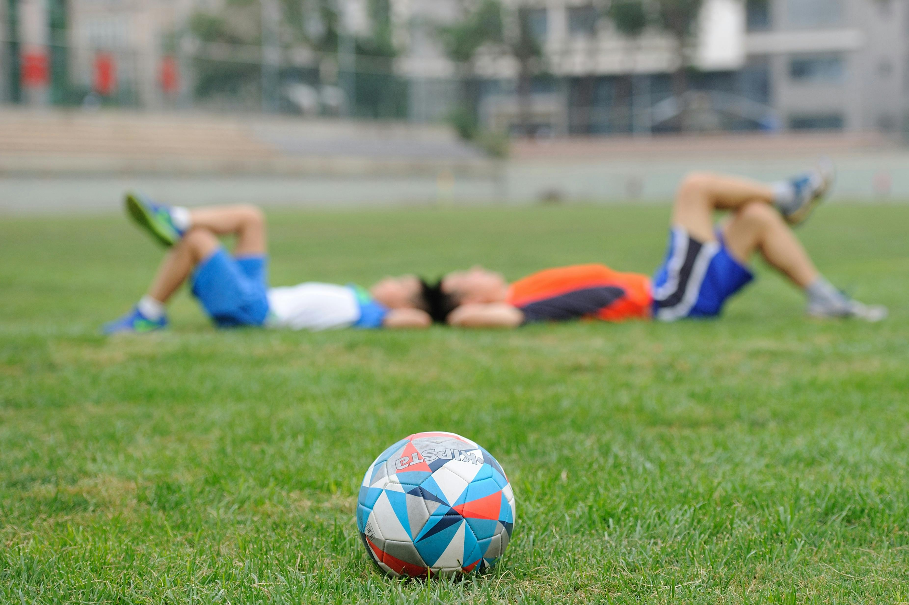
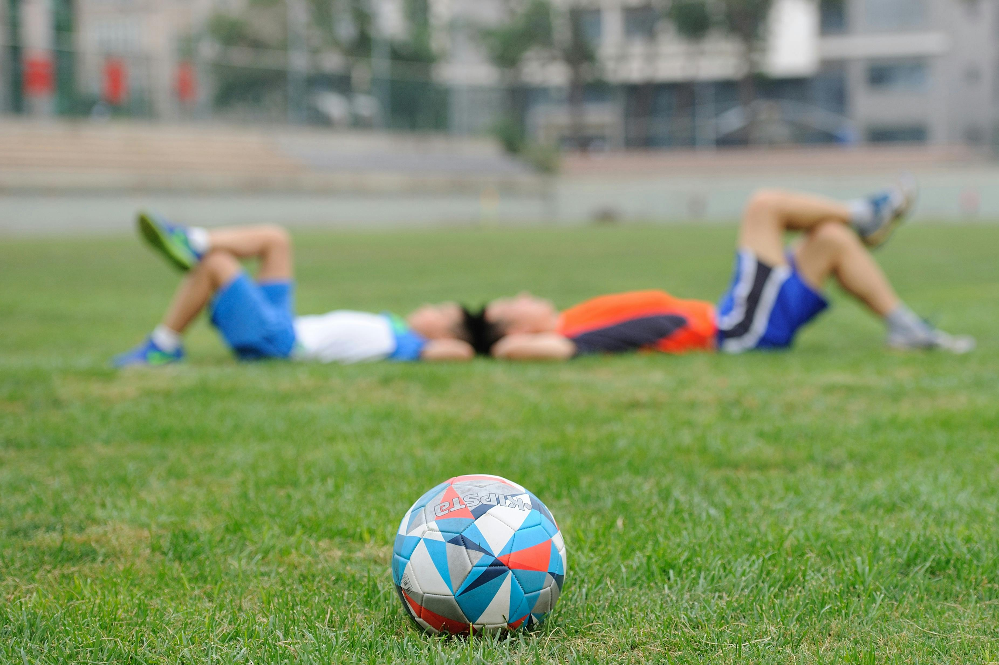

Salud Física
Programas de entrenamiento personalizados, fisioterapia y seguimiento médico constante.
VerTodo lo que necesitas saber sobre el cuidado de los jugadores, el cuerpo técnico, la alimentación y más.
EmpezarEl cuidado de los jugadores es esencial para su rendimiento y bienestar. Involucra una serie de prácticas y cuidados médicos, físicos y psicológicos.
Programas de entrenamiento personalizados, fisioterapia y seguimiento médico constante.
Ver 

El cuerpo técnico juega un papel crucial en el desarrollo del equipo, desde la planificación de entrenamientos hasta la estrategia en el campo.
Diseñan y supervisan los entrenamientos, analizan los partidos y desarrollan tácticas de juego.
VerTrabajan con los jugadores para mejorar su mentalidad y rendimiento bajo presión.
VerLa alimentación adecuada es fundamental para el rendimiento deportivo. Involucra una dieta equilibrada y adaptada a las necesidades específicas de cada jugador.
Desarrollan planes alimenticios personalizados para optimizar el rendimiento y la salud.
VerPlanes de hidratación específicos para mantener el equilibrio de líquidos y electrolitos.
Ver


Explora el increíble viaje de la Selección Argentina desde 2021 hasta 2024. Conoce los momentos cruciales y las victorias que los llevaron a ser campeones del mundo y bicampeones de América. Sumérgete en esta historia de pasión y gloria. ¡Vamos Argentina!
Argentina ganó las Copas América en 2021 y 2024, rompiendo una sequía de 28 años y consolidando su dominio bajo Lionel Scaloni.
VerEn la Finalissima 2022, Argentina venció a Italia 3-0 en Wembley. Obteniendo el dominio argentino en el fútbol internacional.
VerArgentina ganó el Mundial 2022 en Catar al vencer a Francia en una final emocionante. Este fue el tercer título mundial para Argentina y el primero desde 1986.
Ver